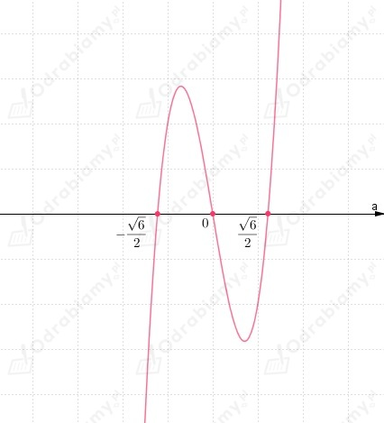

Z treści zadania oraz rysunku możemy odczytać, że podstawą pudełka jest prostokąt o wymiarach:
Natomiast jego wysokość jest równa x.
Należy wyznaczyć wysokość pudełka o największej możliwej objętości.
założenia:
zatem:
Zapisujemy wzór funkcji opisującej objętość pudełka w zależności od zmiennej x:
Wyznaczamy pochodną funkcji V:
Wyznaczamy miejsca zerowe funkcji V:
Rozwiązujemy równanie:
Zauważamy, że:
Funkcja V osiąga maksimum w punkcie x=10-2√7.
Odp: Pudełko ma największa objętość, gdy wysokość ma długość 10-2√7 cm.
Z treści zadania wiemy, że drut długości a dzielimy na dwie części.
Z pierwszej części powstaje szkielet sześcianu.
Z drugiej części powstaje szkielet prostopadłościanu o podstawie kwadratowej i polu ściany bocznej dwukrotnie
większym niż pole podstawy.
Niech
x - długość krawędzi sześcianu
y - długość krawędzi podstawy prostopadłościanu
h - wysokość prostopadłościanu
wiemy, że:
zatem:
h=2y - wysokość prostopadłościanu
Długość całego drutu możemy zapisać w postaci:
założenia:
Należy wyznaczyć podział drutu, aby suma objętości tych brył była najmniejsza.
Zapiszmy sumę objętości:
Korzystając z tego, że:
zapisujemy wzór funkcji opisującej sumę objętości powstałych brył w zależności od zmiennej x:
Wyznaczamy pochodną funkcji V:
Wyznaczamy miejsca zerowe funkcji V':
Rozwiązujemy równanie:
Wobec tego szukaną proporcje podziału odcinka możemy zapisać w postaci:
Odp: Wnioskujemy, że drut należy podzielić w proporcji:
Z treści zadania oraz rysunku przedstawionego w podręczniku zauważmy, że
współrzędne wierzchołków prostokąta możemy zapisać jako:
założenia:
Długość boków prostokąta, to:
Należy wyznaczyć długości boków prostokąta OABC dla których jego pole
będzie największe.
Zapisujemy wzór funkcji opisującej pole prostokąta w zależności od zmiennej a:
Obliczmy pochodną funkcji P:
Wyznaczamy miejsca zerowe funkcji P:
Rozwiązujemy równanie:
Zauważamy, że:
Funkcja P osiąga maksimum w punkcie a=2.
Wobec tego pole prostokąta będzie największe, gdy:
Odp: Pole prostokąta będzie największe, gdy |OA|=2, |AB|=16.
Z treści zadania wiemy, że wierzchołki trapezu należą do paraboli:
przy czym końce dłużej podstawy trapezy są punktami przecięcia paraboli z osią OX.
Należy wyznaczyć największe możliwe pole takiego trapezu.
Zauważamy, że ramiona paraboli są skierowane w dół, jej wierzchołek znajduje sie w punkcie (0, 4) oraz
miejsca zerowe, to:
Przyjmijmy oznaczenia jak na rysunku poniżej:
Zauważamy, że dłuższa podstawa trapezu ma długość 4.
Przyjmijmy, że wierzchołki krótszej podstawy mają współrzędne:
Wobec tego:
natomiast wysokość trapezu ma długość:
założenia:
Zapisujemy wzór funkcji opisującej pole trapezu ze względu na zmienną x:
Wyznaczamy pochodna funkcji P:
Wyznaczamy miejsca zerowe funkcji P':
Rozwiązujemy równanie:
Zauważamy, że:
Funkcja P osiąga maksimum w punkcie x=2/3.
Wyznaczamy największe możliwe pole tego trapezu:
Odp: Największe możliwe pole tego trapezu wynosi 256/27.
a)
Z rysunku odczytujemy, że:
Dowolnie wybrany punkt Q na paraboli ma współrzędne:
Wyznaczamy długość odcinka PQ korzystając ze wzoru:
Zapisujemy odległość punktu P od punktu Q za pomocą wzoru funkcji zmiennej a:
Pomocniczo weźmy funkcję g opisana wzorem:
Funkcji f przyjmuje w tym samym punkcie wartość najmniejszą, co funkcja g:
Wyznaczamy pochodną funkcji g:
Wyznaczamy miejsca zerowe funkcji g':
Rozwiązujemy równanie:
Z wykresu funkcji możemy odczytać, że:
Zauważmy, że w punktach:
funkcja g ma minimum lokalne.
Wobec tego punkty należące do paraboli, których odległość od punktu P jest najmniejsza to:
b)
Z rysunku odczytujemy, że:
Dowolnie wybrany punkt Q na paraboli ma współrzędne:
Wyznaczamy długość odcinka PQ korzystając ze wzoru:
Zapisujemy odległość punktu P od punktu Q za pomocą wzoru funkcji zmiennej a:
Pomocniczo weźmy funkcję g opisana wzorem:
Funkcji f przyjmuje w tym samym punkcie wartość najmniejszą, co funkcja g:
Wyznaczamy pochodną funkcji g:
Wyznaczamy miejsca zerowe funkcji g':
Rozwiązujemy równanie:

Z wykresu funkcji możemy odczytać, że:
Zauważmy, że w punktach:
funkcja g ma minimum lokalne.
Wobec tego punkty należące do paraboli, których odległość od punktu P jest najmniejsza to:
c)
Z rysunku odczytujemy, że:
Dowolnie wybrany punkt Q na paraboli ma współrzędne:
Wyznaczamy długość odcinka PQ korzystając ze wzoru:
Zapisujemy odległość punktu P od punktu Q za pomocą wzoru funkcji zmiennej a:
Pomocniczo weźmy funkcję g opisana wzorem:
Funkcji f przyjmuje w tym samym punkcie wartość najmniejszą, co funkcja g:
Wyznaczamy pochodną funkcji g:
Wyznaczamy miejsca zerowe funkcji g':
Rozwiązujemy równanie:
Z wykresu funkcji możemy odczytać, że:
Zauważmy, że w punktach:
funkcja g ma minimum lokalne.
Wobec tego punkty należące do paraboli, których odległość od punktu P jest najmniejsza to:
Z treści zadania wiemy, że:
Zauważamy, że wierzchołek paraboli znajduje się w punkcie (0, -1) natomiast miejsca zerowe funkcji, to:
Przyjmijmy oznaczenia jak na rysunku poniżej:
Współrzędne punktu styczności:
Jeśli funkcja f ma w punkcie x0 pochodną, to styczną do wykresu tej funkcji
w punkcie (x0, f(x0)) jest prosta o równaniu:
Wiemy, że:
wobec tego:
Wyznaczamy pochodną funkcji f:
zatem pochodna funkcji f w punkcie x0:
Wyznaczamy równanie stycznej:
Zauważmy, że długości boków trójkąta możemy wyznaczyć wyznaczając punkty
przecięcia stycznej z osiami układu współrzędnych.
Bok trójkąta znajdujący się na osi OX:
Bok trójkąta znajdujący się na osi OY:
Pole trójkąta prostokątnego o bokach długości x, y możemy obliczyć ze wzoru:
Zapisujemy wzór funkcji opisującej pole trójkąta w zależności od zmiennej x0:
Obliczamy pochodną funkcji P:
Wyznaczamy miejsca zerowe funkcji P':
Rozwiązujemy równanie:
Zastosujmy podstawienie pomocnicze:
Odczytujemy, że:
Wobec tego funkcja P osiąga minimum w punkcie x0=√3/3.
Zauważamy, że funkcja f jest jest funkcją parzystą (jest symetryczna względem osi OY), więc